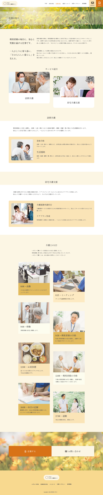
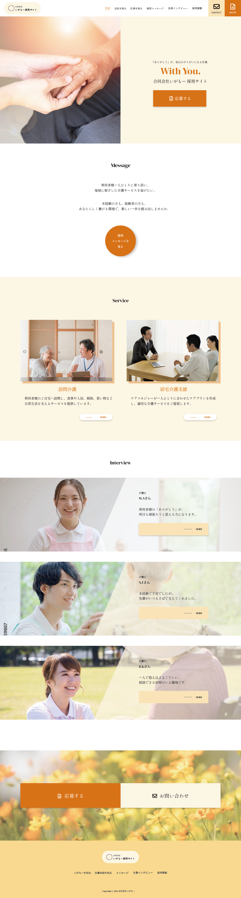

自主制作
合同会社いがもー 採用サイト
Background
制作背景
- クライアント
- 沖縄県沖縄市に実在する地域密着型の訪問介護サービス会社
- ターゲット
- 介護業界への就職・転職を検討している20〜40代の求職者（未経験者・経験者を含む）
- 目的・狙い
-
- 企業の雰囲気や働きやすさを伝え、応募につなげる採用サイトを制作すること。
- 要望
-
- 地域に根ざした温かみや安心感を伝えるとともに、未経験者でも安心して応募できる印象を与えるデザイン。
Concept
コンセプト
- 与えたいイメージ
- 安心感、親しみやすさ、信頼性
- フォント
- Shippori Mincho
- カラー
-
温かみのある印象をもたせるために、ベージュ系統のカラーを使用しました。
Point
ポイント
- ◾️求職者が知りたい情報を分かりやすく整理
- 求職者が仕事内容や会社の雰囲気をイメージしやすいよう、「会社を知る」「仕事を知る」「社員インタビュー」「採用情報」などのコンテンツを整理した。また、ページ下部には全ページ共通で応募・お問い合わせボタンを配置し、応募までスムーズに進める導線を意識した。
- ◾️写真を多く取り入れ、親しみやすさを表現
- 介護サービスは「人」が伝わることが重要だと考え、利用者様とスタッフが関わる写真を多く取り入れた。写真を主役にしたレイアウトと温かみを感じるカラーを使用することで、親しみやすさと安心感を表現した。

「仕事を知る」ページ（スクロールできます）

「仕事を知る」ページ（スクロールできます）
Overview
概要
- 作業工程
- 企画／設計／ワイヤーフレーム作成／デザイン
- 使用ツール・言語
-
- XD（ワイヤーフレーム作成、デザイン）
- Photoshop、Illustrator（画像加工、トリミング）
- 制作期間
-
- ■ 1週間
- 企画：3日間
- 設計、デザイン：4日